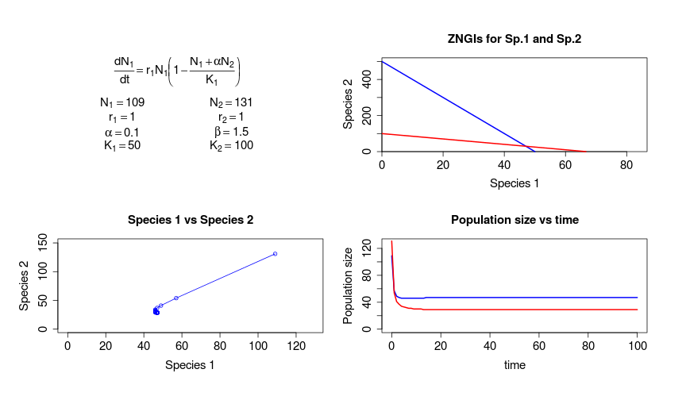
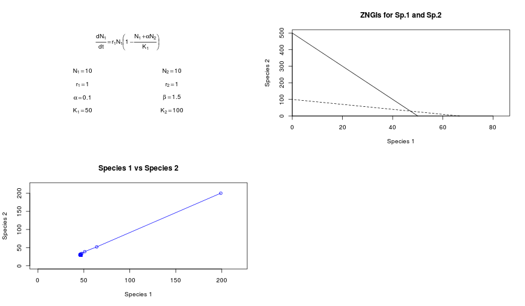

Differential Equations in R
An introduction with Lotka-Volterra competition models
Marcel Vaz & Gaurav Kandlikar
Kraft Lab


R as a pedagogical tool? - Consider two groups of grad students: red and yellow .
There is a limited supply of coffee in the department, for which the two groups compete.

- Grad students' coffee consumption is decreased by others in the same group (intraspecific competition) and grad students in other groups (interspecific competition)
- \(\alpha\) = estimate of interspecific competition
Lotka-Volterra equations model these systems.
- Consider a two-species system.
- \(N_{1}\) and \(N_{2}\) represent population sizes of the two groups
- L-V competition equations allow us to project changes in \(N\) over time
- \[ \frac{dN_{1}}{dt} = (rN)\left(1-\frac{N_{1} + \alpha_{2,1}*N_{2}}{K_{1}}\right) \]
- \[ \frac{dN_{2}}{dt} = (rN)\left(1-\frac{N_{2} + \alpha_{1,2}*N_{1}}{K_{2}}\right) \]
- This is a pair of Ordinary Differential Equations (ODEs)
Dynamic models require dynamic solutions
\[ \frac{dN_{1}}{dt} = (rN)\left(1-\frac{N_{1} + \alpha_{2,1}*N_{2}}{K_{1}}\right) \]
The equilibrium value of \(N_{1}\) is a function of \(\alpha\) and \(N_{2}\):
\[ \hat{N_{1}} = K + \alpha * N_{2} \]
Base
Rlacks an ODE solver, butdeSolvecomes to the rescue.
Introducing deSolve
# install.packages("deSolve")
require("deSolve")
ls("package:deSolve")
## [1] "aquaphy" "ccl4data" "ccl4model"
## [4] "cleanEventTimes" "daspk" "dede"
## [7] "diagnostics" "diagnostics.default" "diagnostics.deSolve"
## [10] "DLLfunc" "DLLres" "euler"
## [13] "euler.1D" "lagderiv" "lagvalue"
## [16] "lsoda" "lsodar" "lsode"
## [19] "lsodes" "matplot.1D" "nearestEvent"
## [22] "ode" "ode.1D" "ode.2D"
## [25] "ode.3D" "ode.band" "plot.1D"
## [28] "radau" "rk" "rk4"
## [31] "rkMethod" "SCOC" "timestep"
## [34] "vode" "zvode"
Introducing the function ode
str(ode)
## function (y, times, func, parms, method = c("lsoda", "lsode", "lsodes",
## "lsodar", "vode", "daspk", "euler", "rk4", "ode23", "ode45", "radau",
## "bdf", "bdf_d", "adams", "impAdams", "impAdams_d", "iteration"),
## ...)
How to use ode
str(ode)
## function (y, times, func, parms, method = c("lsoda", "lsode", "lsodes",
## "lsodar", "vode", "daspk", "euler", "rk4", "ode23", "ode45", "radau",
## "bdf", "bdf_d", "adams", "impAdams", "impAdams_d", "iteration"),
## ...)
y= initial values of the system (here, \(N_{1}\) and \(N_{2}\))times= length of time steps we want to projectfunc= a user-defined function to solve (here, the L-V equations!)parms= the parameters to be used infunc(here, \(\alpha\), \(K_{1}\), etc.)
Setting up the user-defined func
# Define the function lv
lv <- function (time , init , params) {
# set everything up as a list to be accessed throughout the function
with (as.list(c(time , init , params)), {
# description of parameters to be included in params:
# r1 = growth rate of Sp. 1; r2 = growth rate of Sp. 2
# N = population size of Sp. 1; P = Population Size Sp. 2
# a = competitive impact of Sp. 2 on Sp. 1; b = competitive impact of Sp 1 on Sp 2
# K1 and K2 = carrying capacities of Sp. 1 and Sp. 2, respectively
# Define the pair of ODEs:
# Growth of species 1 is a function of species 2
N1 <- ( r1 * N * (1 - (N+a*P) / K1) )
# Growth of species 2 is a function of species 1
N2 <- ( r2 * P * (1 - (P+b*N) / K2) )
# Return a list of the current population size of Sp.1 and Sp. 2
return (list (c (N1 , N2)))
})
}
Testing lv
Provide a set of starting parameters:
# randomly select values for starting N1 and N2
p <- runif(n = 2, min = 50, max = 150)
init<-c(N = floor(p[1]), P = floor (p[2]))
# run the ODE for 100 time steps
time <- seq (0, 100, by=1)
# define species growth rates, carrying capacities and interspecific competition parameters
params <- c(r1 = 1, b = 1.5 , K1 = 50 , r2 = 1, a = .1 , K2 = 100)
# run the ODE
lvout <- floor(as.data.frame(ode(func=lv,y=init,parms=params,times=time)))
str(lvout)
Testing lv
## 'data.frame': 101 obs. of 3 variables:
## $ time: num 0 1 2 3 4 5 6 7 8 9 ...
## $ N : num 56 46 45 45 45 45 46 46 46 46 ...
## $ P : num 132 68 51 44 40 37 35 33 32 32 ...
- It works!
Fun with graphs
par(mfrow=c(2,2),bg="white")
# Plot equation and parameters
# Panel A: current parameter values
plot(1:10,type="n",xlab="",ylab="",xaxt="n",yaxt="n",bty="n")
text(5,9,expression(frac(dN[1],dt) == r[1]*N[1]*bgroup("(",1-frac(N[1]+alpha*N[2],K[1]),")")),cex=1.5)
text(3,5.7,bquote(N[1] == .(floor(p[1]))),cex=1.5)
text(7,5.7,bquote(N[2] == .(floor(p[2]))),cex=1.5)
text(3,4.2,bquote(r[1] == .(params["r1"])),cex=1.5)
text(7,4.2,bquote(r[2] == .(params["r2"])),cex=1.5)
text(3,2.7,bquote(alpha == .(params["a"])),cex=1.5)
text(7,2.7,bquote(beta == .(params["b"])),cex=1.5)
text(3,1.2,bquote(K[1] == .(params["K1"])),cex=1.5)
text(7,1.2,bquote(K[2] == .(params["K2"])),cex=1.5)
# Panel B: Zero Net Growth Isoclines based on parameters above.
plot(1,type="n",xlim=c(0,max(params["K1"],params["K2"]/params["b"])+20),
ylim=c(0,max(params["K2"] ,params["K1"]/params["a"])+20),
xlab ="Species 1",ylab="Species 2",main="ZNGIs for Sp.1 and Sp.2",
xaxs="i",yaxs="i",cex.axis=1.5,cex.lab=1.5)
lines(x = c(params["K1"],0),y = c(0,params["K1"]/params["a"]),lwd=2,col="blue")
lines(x = c(params["K2"]/params["b"], 0) ,y = c(0,params["K2"]),lwd=2,col="red")
points (x = p[1] , y = p[2] , cex = 2 , pch = 20)
# add legend
# legend(x="topright",lty=c(1,2),legend=c("Species 1","Species 2"),bty="n")
# Plot out the results of the ODE.
# Panel C: Sp. 1 vs Sp. 2
plot(lvout$P~lvout$N,type="o",col="blue",xlim=c(0,max(lvout$N)+20),
ylim=c(0,max(lvout$P)+20), main = "Species 1 vs Species 2",xlab="Species 1",
ylab="Species 2",cex.axis=1.5,cex.lab=1.5)
# Panel D: N1 and N2 vs Time
plot(lvout$N~time,ylim=c(0,max(lvout$N)+20),ylab="Population size",type="l",lwd=2,col="blue",cex.axis=1.5,cex.lab=1.5,main="Population size vs time")
points(lvout$P~time,col="red",type="l",lwd=2)
# legend (x =,col=c("blue","red"),lty=c(1,1),legend=c("Sp. 1", "Sp. 2"),bty="n",ncol=2)
Fun with graphs


Simplifying the process: source the code
source("~/grad/Dropbox/courses/fall2014/entm798v/scripts/R_project/lv_source.R")
p <- runif(n = 2, min = 50, max = 150)
init<-c(N = floor(p[1]), P = floor (p[2]))
time <- seq (0, 100, by=1)
params <- c(r1 = 1, b = 1.5 , K1 = 50 , r2 = 1, a = .1 , K2 = 100)
# run the ODE
lvout <- floor(as.data.frame(ode(func=lv_func,y=init,parms=params,times=time)))
plot.all(lvout)
## Error: invalid type (closure) for variable 'time'
